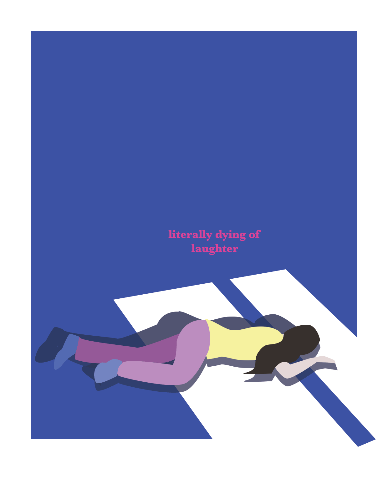
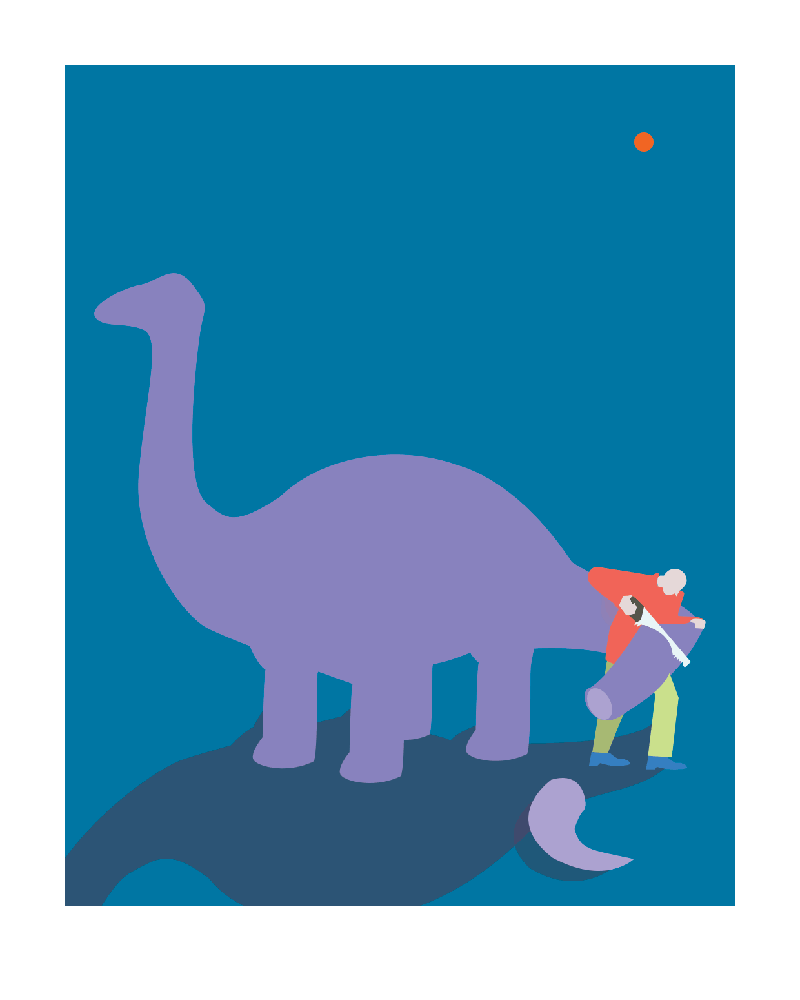
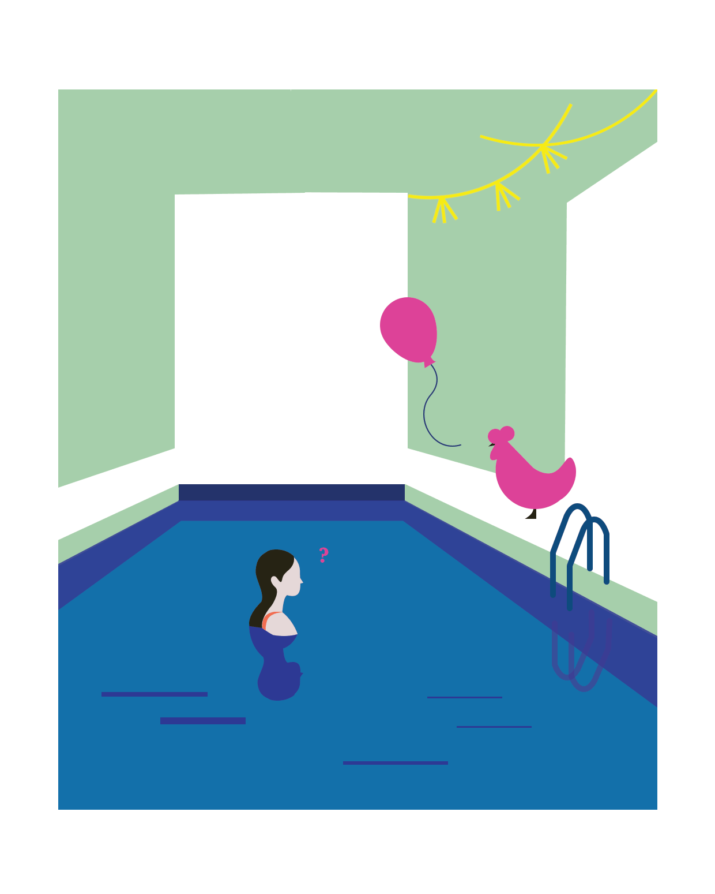
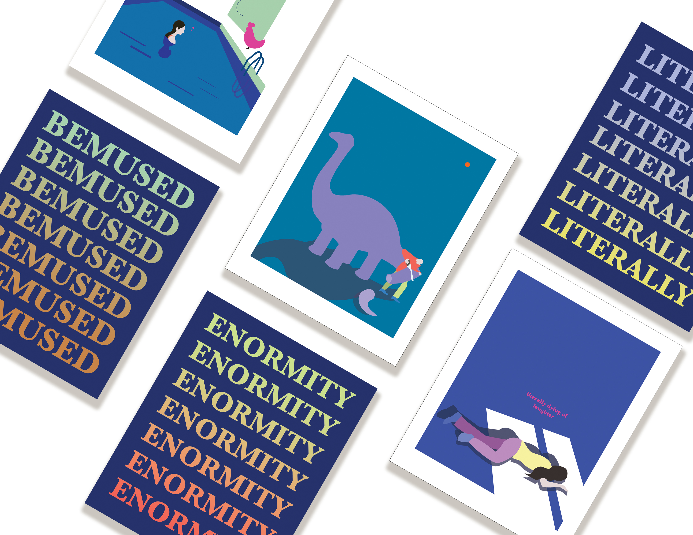
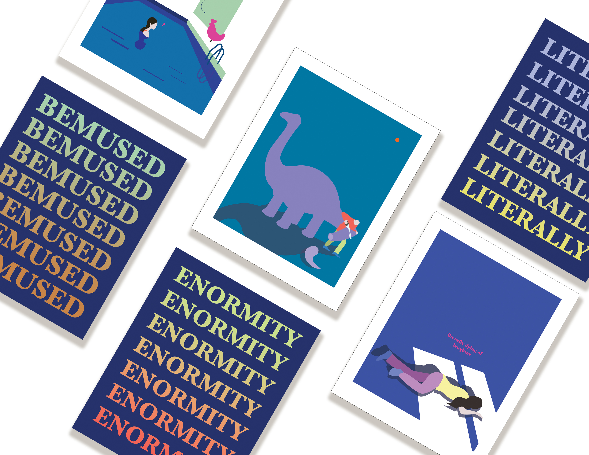

PART 1: MOSQUITO BITES
2019
I focused on the word choice when we say mosquitos "bite". In fact, mosquitos use part of their mouthes to suck blood through our skin. I found some of the common words that are usually misused. I merged the wrong and correct definitions in the illustrations and created into a set of postcards that children can have easy access to learning.
Motion, Product Design

 

I focused on the word choice when we say mosquitos "bite". In fact, mosquitos use part of their mouthes to suck blood through our skin. I found some of the common words that are usually misused. I merged the wrong and correct definitions in the illustrations and created into a set of postcards that children can have easy access to learning.
Motion, Product Design